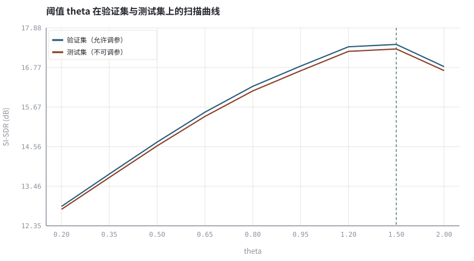
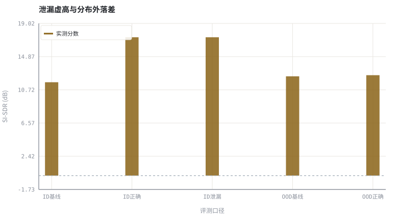

第 30 章泛化、鲁棒性与评测陷阱
把「分数很高」和「真的好用」分开：数据划分、分布外测试与指标组合才决定结论的边界。
本章位置：承接 第 29 章 · 量化、剪枝与端侧推理 的量化部署改动：模型换了实现就要重测；第 31 章 · 结课项目：小型掩码估计器与全链路验证 把本章协议落成结课项目的验收清单，附录 A 汇总指标与命令速查。
评测集是发版门禁：验证集是 CI 里可以反复调参的用例，测试集是冻结的回归集，盲测集是生产灰度。把回归集当成调参脚本的输入，等于把单元测试的答案写进了代码。
- 能把一次评测拆成训练集、验证集、测试集与盲测集，并说明各自允许的操作。
- 能复现「在测试集上扫阈值」造成的分数虚高，并量化虚高幅度。
- 能构造分布外退化轴（噪声、房间、电平、设备），报告同分布与分布外的落差。
- 能写出一份可复核的评测协议，指出至少四种常见陷阱。
§知识点地图
每个知识点都配了 1～2 个扩展学习链接；本章完整资源清单见 扩展学习。
| # | 知识点 | 扩展学习 | 状态 |
|---|---|---|---|
| 1 | 训练/验证/测试划分 | Microsoft DNS Challenge ↗ · SpeechBrain ↗ | 正文已覆盖 |
| 2 | 数据泄漏 | Microsoft DNS Challenge ↗ · LibriSpeech ↗ | 正文已覆盖 |
| 3 | 测试集调参 | DNSMOS ↗ · Microsoft AEC Challenge ↗ | 正文已覆盖 |
| 4 | 样本内与样本外 | DNSMOS ↗ · Microsoft AEC Challenge ↗ | 正文已覆盖 |
| 5 | 分布外 OOD | DNSMOS ↗ · Microsoft AEC Challenge ↗ | 正文已覆盖 |
| 6 | 鲁棒性与退化轴 | Microsoft AEC Challenge ↗ · DEMAND 噪声库 ↗ | 正文已覆盖 |
| 7 | 指标组合与 Goodhart | ITU-T P.862 PESQ ↗ · STOI / ESTOI ↗ | 正文已覆盖 |
| 8 | 可复现评测协议 | DNSMOS ↗ · Microsoft AEC Challenge ↗ | 正文已覆盖 |
§30.1从「分数」到「结论」：样本内与样本外
第 03 章 · 怎么算「变好了」：客观指标、尺度与主观听测 给出指标怎么算，第 18 章 · 上卷综合实验：完整传统 3A 链路与评测 给出经典链路怎么测；本章处理更前置的问题：这份分数在回答哪个问题，它的有效范围到哪里为止。把评测当成程序里的回归测试：训练集是开发时跑的用例，验证集是 CI 里调参用的用例，测试集是发版前只跑一次、跑完就冻结的用例。
D = D_train ∪ D_val ∪ D_test ，三者两两不交 ，θ* = argmax_θ Score(D_val ; θ)
任何在 D_test 上做的选择——挑阈值、挑 checkpoint、挑噪声类型、甚至「看了坏样本之后决定加一条后处理」——都会把测试集变成验证集，于是报告出来的分数不再是样本外成绩。
| 集合 | 允许做什么 | 不允许做什么 | 对应工程动作 |
|---|---|---|---|
| D_train | 拟合权重、设计数据增强与损失 | 接触测试标签 | 训练循环 |
| D_val | 选超参、早停、选 checkpoint | 再拿它报最终分数 | CI 调参 / 模型选择 |
| D_test | 只跑一次前向并报告均值 | 按结果改任何参数 | 发版冻结的回归集 |
| D_blind | 结项时跑一次，附失败样本 | 开发全程不可见 | 盲测归档 |
§30.2四类最常见的评测陷阱
- 泄漏（leakage）：同一段录音、同一说话人、同一房间或同一噪声片段被切到两个集合。语音帧高度相关，按帧随机切分等于把样本内成绩当样本外报；分组必须按录音 ID / 说话人 / 房间做。
- 测试集调参：在 D_test 上扫候选并报告最大值。候选越多，这个最大值越像极值统计而不是泛化能力。
- 指标单一与 Goodhart 化：只优化 segSNR 会奖励「把一切都压成静音」；必须同时报失真类、可懂度类与主观/无参考类指标（见 第 03 章 · 怎么算「变好了」：客观指标、尺度与主观听测）。
- 尺度与口径漂移：AGC 改变整体增益后不做尺度对齐，或基线与模型用了不同窗长、采样率、VAD 口径，分数不可比。
读完测试集里的坏样本再改代码，即使没有把测试样本喂进梯度，结论也已被条件化。工程做法是另开一个最终盲测集：开发全程不可见，只在结项时跑一次。
第 27 章 · 因果性与流式推理：状态缓存、感受野 的流式化、第 29 章 · 量化、剪枝与端侧推理 的量化之后，模型已经不是同一个函数；任何部署改动都应把盲测集再跑一遍，而不是沿用浮点离线分数。
§30.3分布外与鲁棒性：把「没见过」写成可测集合
鲁棒性不是形容词，而是一张退化类型 × 强度的二维表。训练分布里见过的轴叫同分布（ID），没见过的轴叫分布外（OOD）。
| 轴 | 训练内示例 | 分布外示例 | 应观察的量 |
|---|---|---|---|
| 噪声 | 平稳高斯白噪声 | 低频嗡鸣、周期性突发、键盘敲击 | 分数落差与残余噪声可听度 |
| 房间 | T60 约 0.2 s 的合成 RIR | 强混响、路径突变、扬声器削波 | ERLE 是否塌陷、双讲是否漏回声 |
| 电平 | 固定 RMS 区间 | 极低电平 + AGC 大增益、削波 | LUFS 与真峰值、噪声被一起放大 |
| 设备 | 16 kHz 合成语音 | 重采样、编解码、时钟漂移 | 缓冲对齐后的稳定性 |
Gap_OOD(θ*) = Score(D_ID ; θ*) − Score(D_OOD ; θ*) ，θ* 只由 D_val 决定
注意 Gap_OOD 与「虚高」是两件事：前者是分布漂移带来的真实落差，后者是评测口径错误带来的假象。本章实验把两者分别打印，读者可改噪声配方观察哪一项先恶化。
§30.4一份可复核的评测协议与进阶路径
- 先写死划分：按录音 ID 分组，固定随机种子
random.seed(7)，把分组清单落到文件。 - 写死口径：采样率、窗长、帧移、是否尺度对齐、指标实现、盲测集路径。
- 先跑三行基线：无处理、经典 3A（第 18 章 · 上卷综合实验：完整传统 3A 链路与评测）、待评模型，同表输出。
- 再做消融：每次只改一个变量，记录它在 D_val 与 D_test 上的收益差。
- 最后跑盲测：一次前向，输出均值、离散度与失败样本归档。
第 31 章 · 结课项目：小型掩码估计器与全链路验证 把上述五步写成验收清单；本章实验只用一个可解释阈值掩码做载体，换成 PyTorch 模型后协议一字不改。
进阶路径：把本实验的阈值增益换成 SpeechBrain ↗ 的增强配方，用 DNS-Challenge ↗ 的真实噪声替换合成噪声，再用 DNSMOS ↗ 补一个无参考分数；训练循环参考 PyTorch 文档 ↗。
§Python 实验
实验 30-1 · 测试集调参的虚高与分布外噪声下的落差
#!/usr/bin/env python3
# -*- coding: utf-8 -*-
"""用纯标准库合成四组数据，扫描可解释阈值掩码的超参，分别打印泄漏虚高与 OOD 落差。
全部语音 / 噪声 / 房间冲激响应均为代码合成信号，仅用于教学演示机制与量级。
"""
from __future__ import annotations
import math
import pathlib
import random
import statistics
import sys
import time
_here = pathlib.Path(__file__).resolve()
for _p in _here.parents:
if (_p / "tools" / "dsp.py").exists():
sys.path.insert(0, str(_p / "tools"))
break
from dsp import (SAMPLE_RATE, fft, hann, stft, istft, magnitude_db, spectrum,
white_noise, tone, chirp, synthetic_speech, rir, convolve,
fft_convolve, delay, clip, normalize_peak, rms, rolling_rms,
smooth, db, energy_db, snr_db, erle_db, seg_snr_db,
scale_align, si_sdr_db, lufs_approx,
write_wav, read_wav, wav_info)
from chart import Chart, heatmap, BLUE, RED, GREEN, AMBER
FIG = _here.parents[1] / "fig"
AUDIO = _here.parents[1] / "audio"
FIG.mkdir(exist_ok=True)
AUDIO.mkdir(exist_ok=True)
random.seed(7)
# ---- 参数区 ----
N = 4096 # 每条样本 0.256 s @ 16 kHz
N_FFT, HOP = 256, 128
THETAS = (0.20, 0.35, 0.50, 0.65, 0.80, 0.95, 1.20, 1.50, 2.00)
NOISE_AMP = 0.035 # 训练与同分布测试的高斯噪声幅度
FLOOR = 0.12 # 掩码增益下限
# ---- 计算与作图 ----
rng = random.Random(7)
def noise_of(kind, n):
if kind == "white":
return white_noise(rng, n, NOISE_AMP)
hum = [0.75 * NOISE_AMP * math.sin(2 * math.pi * 93 * i / SAMPLE_RATE)
+ 0.45 * NOISE_AMP * math.sin(2 * math.pi * 187 * i / SAMPLE_RATE)
for i in range(n)]
for start in range(400, n, 900):
for i in range(start, min(start + 60, n)):
hum[i] += 2.4 * NOISE_AMP * (1.0 if (i - start) % 2 == 0 else -1.0)
return [hum[i] + 0.15 * rng.gauss(0, NOISE_AMP) for i in range(n)]
def mix(kind):
clean = synthetic_speech(rng, N)
nz = noise_of(kind, N)
return clean, [clean[i] + nz[i] for i in range(N)], nz
train_clean, train_noisy, train_nz = mix("white")
val_clean, val_noisy, val_nz = mix("white")
id_clean, id_noisy, id_nz = mix("white")
ood_clean, ood_noisy, ood_nz = mix("ood")
# 噪声谱只从训练集估计：这是模型带进测试集的先验
nz_frames = stft(train_nz, N_FFT, HOP)
ns = [sum(math.hypot(re[k], im[k]) for re, im in nz_frames) / len(nz_frames)
for k in range(N_FFT)]
def frames_of(noisy):
return stft(noisy, N_FFT, HOP)
def apply_mask(frame_list, theta):
out_frames = []
for re, im in frame_list:
rr, ii = list(re), list(im)
for k in range(N_FFT):
mag = math.hypot(rr[k], ii[k])
g = max(FLOOR, 1.0 - theta * ns[k] / (mag + 1e-9))
rr[k] *= g
ii[k] *= g
out_frames.append((rr, ii))
return istft(out_frames, N_FFT, HOP, N)
def score(clean, est):
return si_sdr_db(est, clean)
val_frames = frames_of(val_noisy)
id_frames = frames_of(id_noisy)
ood_frames = frames_of(ood_noisy)
val_curve = [score(val_clean, apply_mask(val_frames, t)) for t in THETAS]
id_curve = [score(id_clean, apply_mask(id_frames, t)) for t in THETAS]
best_val_i = max(range(len(THETAS)), key=lambda i: val_curve[i])
theta_star = THETAS[best_val_i]
leak_i = max(range(len(THETAS)), key=lambda i: id_curve[i])
leak_theta = THETAS[leak_i]
correct_id = id_curve[best_val_i]
leak_id = id_curve[leak_i]
correct_ood = score(ood_clean, apply_mask(ood_frames, theta_star))
baseline_id = score(id_clean, id_noisy)
baseline_ood = score(ood_clean, ood_noisy)
inflate = leak_id - correct_id
gap_ood = correct_id - correct_ood
c = Chart(FIG / "30-leak.svg", "阈值 theta 在验证集与测试集上的扫描曲线",
xlabel="theta", ylabel="SI-SDR (dB)",
xticks=[(i, "%.2f" % t) for i, t in enumerate(THETAS)])
c.line(range(len(THETAS)), val_curve, BLUE, label="验证集（允许调参）")
c.line(range(len(THETAS)), id_curve, RED, label="测试集（不可调参）")
c.vline(best_val_i, GREEN, label="验证集最优点")
print("泄漏图:", c.save())
b = Chart(FIG / "30-ood.svg", "泄漏虚高与分布外落差", xlabel="评测口径", ylabel="SI-SDR (dB)",
xticks=[(0, "ID基线"), (1, "ID正确"), (2, "ID泄漏"), (3, "OOD基线"), (4, "OOD正确")])
b.bars(range(5), [baseline_id, correct_id, leak_id, baseline_ood, correct_ood], AMBER,
label="实测分数")
b.hline(0.0, "#9aa6b2")
print("分布外图:", b.save())
write_wav(AUDIO / "30-clean.wav", normalize_peak(id_clean))
write_wav(AUDIO / "30-id-noisy.wav", normalize_peak(id_noisy))
write_wav(AUDIO / "30-id-masked.wav", normalize_peak(apply_mask(id_frames, theta_star)))
write_wav(AUDIO / "30-ood-noisy.wav", normalize_peak(ood_noisy))
write_wav(AUDIO / "30-ood-masked.wav", normalize_peak(apply_mask(ood_frames, theta_star)))
print("WAV: %d 帧 / %d Hz / %.2f s / %d 字节" % wav_info(AUDIO / "30-clean.wav"))
print("验证集最优 theta=%.2f | 用测试集挑到 theta=%.2f" % (theta_star, leak_theta))
print("同分布：基线=%.2f dB 正确口径=%.2f dB 测试集挑参=%.2f dB | 虚高=%.2f dB" %
(baseline_id, correct_id, leak_id, inflate))
print("分布外：基线=%.2f dB 同一 theta=%.2f dB" % (baseline_ood, correct_ood))
print("泄漏虚高=%.2f dB | 分布外落差=%.2f dB | 采样率=%d Hz | 扫描候选数=%d" %
(inflate, gap_ood, SAMPLE_RATE, len(THETAS)))操作：先对照 30-leak.svg 的两条曲线，再听 30-ood-noisy.wav 与 30-ood-masked.wav；把 NOISE_AMP 调大后重跑。 预期与判读：本例验证集与测试集的最优点恰好相同（theta*=1.50），虚高为 0.00 dB——流程仍然是错的，只是这一次没被数字抓到；换数据划分或更细网格就可能出现虚高。同一 theta* 挪到分布外嗡鸣噪声上，落差约 4.7 dB，这部分是真实的泛化损失。脚本打印的每一行都是本机实测值，请直接以打印结果为准，不预设任何目标分数。
改参数看趋势：把 THETAS 改成更细的非均匀网格，或换几条测试噪声，观察虚高是否出现；把 noise_of 的嗡鸣频率改成训练见过的白噪声，落差会缩小。 文件位置：part6/30-generalization/code/30-generalization.py


30-clean.wav
干净参考语音（16 kHz / 16-bit 单声道，代码合成信号，不是真实录音）
30-id-noisy.wav
同分布白噪声退化样本（16 kHz / 16-bit 单声道，代码合成信号，不是真实录音）
30-id-masked.wav
同分布样本经阈值掩码处理（16 kHz / 16-bit 单声道，代码合成信号，不是真实录音）
30-ood-noisy.wav
分布外：低频嗡鸣与周期性突发（16 kHz / 16-bit 单声道，代码合成信号，不是真实录音）
30-ood-masked.wav
分布外样本经同一 theta 处理（16 kHz / 16-bit 单声道，代码合成信号，不是真实录音）
代码块右上角可一键复制；仓库里的 code/*.py 由 tools/extract_code.py 从这些代码块自动抽取。脚本只用标准库、固定 random.seed(7)，运行后写出 fig/*.svg 与 audio/*.wav；批量运行用 ./tools/run_python.sh。
§可选真机命令片段
以下命令不参与批量运行，需要本机自行安装对应工具。滤镜是否可用取决于本机 ffmpeg 版本与编译选项，请先用 ffmpeg -filters / ffmpeg -version 自查，并以 https://ffmpeg.org/ffmpeg-filters.html 与各自官方文档为准；本书不假定任何特定版本具备某项能力。
本机自查可用滤镜，再对照官方文档
ffmpeg -hide_banner -filters | grep -E 'afftdn|arnndn|astats|volumedetect|silencedetect'说明：滤镜清单随版本与编译选项变化；以本机输出与 https://ffmpeg.org/ffmpeg-filters.html 官方说明为准，不写死版本。
核对评测样本的时长与格式口径
ffprobe -v error -show_entries stream=sample_rate,channels -of default=noprint_wrappers=1 test.wav说明：比较指标前先确认测试集采样率与声道数一致；不同口径的分数不可直接比较。
§本章参考资料
按本章知识点挑选的精读资料；更多检索入口见 扩展学习。
§相关开源工程
下列工程仅作技术参照，版权与许可证归各自维护者所有。本书实验不依赖它们，也与之无从属关系。
§常见误区
- 按帧而不是按录音/说话人/房间随机切分，造成同源泄漏。
- 在测试集上扫阈值或选 checkpoint，还把最大值当样本外成绩汇报。
- 只报一个 segSNR，忽略了「全压成静音」也能刷分的策略。
- AGC 或量化后不做尺度对齐、不重跑盲测，沿用旧的浮点离线分数。
§习题与思考
- 设计一份按录音 ID 分组的切分脚本，说明它如何避免同源泄漏。
- 推导「候选数增加时测试集最大值单调不降」，并解释这与泛化无关。
- 为实时通话 App 列一张含噪声、房间、电平、设备四轴的 OOD 测试表。
§扩展学习
继续检索
- Google Scholar：generalization robustness data leakage DNSMOS evaluation ↗
- arXiv：generalization robustness data leakage DNSMOS evaluation ↗
- GitHub：generalization robustness data leakage DNSMOS evaluation ↗
全书链接总表见 FFmpeg Filters 文档 ↗ 与 附录 A.7；滤镜是否可用请以本机 ffmpeg -filters 为准。
§延伸阅读与内链
- 第 31 章 · 结课项目：小型掩码估计器与全链路验证 结课项目的验收清单；第 03 章 · 怎么算「变好了」：客观指标、尺度与主观听测 指标定义与 第 18 章 · 上卷综合实验：完整传统 3A 链路与评测 经典评测链路。
- 第 29 章 · 量化、剪枝与端侧推理 量化后再测；第 23 章 · 神经噪声抑制：从 RNNoise 到 DNS Challenge 神经降噪的训练分布设计。